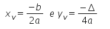
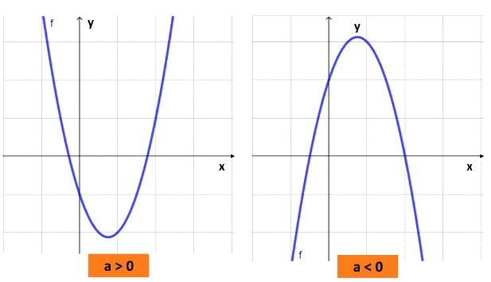

A função quadrática, também chamada de função polinomial de 2º grau, é uma função representada pela seguinte expressão.
Onde a, b e c são números reais e a ≠ 0.
As raízes ou zeros da função do segundo grau representam aos valores de x tais que f(x) = 0. As raízes da função são determinadas pela resolução da equação de segundo grau.
f(x) = ax2 +bx + c = 0
Para resolver a equação do 2º grau podemos utilizar vários métodos, sendo um dos mais utilizados é aplicando a Fórmula de Bhaskara, ou seja
O gráfico das funções do 2º grau são curvas que recebem o nome de parábolas. Diferente das funções do 1º grau, onde conhecendo dois pontos é possível traçar o gráfico, nas funções quadráticas são necessários conhecer vários pontos.
A curva de uma função quadrática corta o eixo x nas raízes ou zeros da função, em no máximo dois pontos dependendo do valor do discriminante (Δ). Assim, temos:
Existe ainda um outro ponto, chamado de vértice da parábola, que é o valor máximo ou mínimo da função. Este ponto é encontrado usando-se a seguinte fórmula:
É possível identificar a posição da concavidade da curva analisando apenas o sinal do coeficiente a. Se o coeficiente for positivo, a concavidade ficará voltada para cima e se for negativo ficará para baixo, ou seja:
Links que podem ajudar